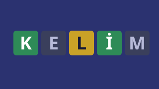

Satranç
Günün Bulmacası
Kaldığın yerden devam ediyorsun
Nasıl oynanır?
Satranç iki kişilik bir strateji oyunudur: her oyuncunun 16 taşı vardır ve amaç rakibin şahını kaçamayacağı şekilde tehdit etmektir, yani mat yapmaktır. Beyaz başlar, sonra sırayla oynanır. Bir taşa dokun: gidebileceği kareler küçük sodyum noktayla, yiyebileceği taşlar köşe çerçeveleriyle gösterilir. Hedef kareye dokun ya da taşı sürükle. Piyonlar bir kare ileri gider (ilk hamlede iki), çapraz yer; kale düz, fil çapraz, vezir ikisi birden gider; at L çizer ve üstten atlar; şah her yöne bir kare gider.
Özel hamleler: Şah ile kale arası boşsa ve ikisi de hiç oynamamışsa rok yapabilirsin; şahına dokunup iki kare yana git. Şah tehdit altındayken, geçtiği karede tehdit varsa ya da hedefi tehdit altındaysa rok yapılamaz. Piyonun rakibin son sırasına gelince terfi eder; açılan panelden vezir, kale, fil ya da at seçersin. Rakip piyon iki kare ilerleyip yanından geçtiyse hemen ardından geçerken alma ile yiyebilirsin.
Oyun nasıl biter? Şah tehdit altında ve kurtulamıyorsa mat olur, oyunu karşı taraf kazanır. Şah tehdit altında değil ama oynayacak yasal hamle kalmadıysa pat olur ve oyun berabere biter. Aynı konumun üçüncü kez oluşması, elli hamlede ne piyon oynanması ne taş alınması ve iki tarafın da mat yapacak taşı kalmaması da beraberliktir. Tahtanın üstünde ve altında yediğin taşları görürsün; yan panelde hamleler Türkçe notasyonla yazılır (ör. “Af3” at f3'e gitti, “Fxc6” fil c6'daki taşı yedi, “O-O” kısa rok).
Bilgisayara karşı beş seviye var: Çaylak neredeyse rastgele oynar, Acemi ve Orta kısa hesap yapıp ara sıra hata yapar, İleri ve Usta derin arar. Yeni başlıyorsan İpucu düğmesi tehdit altındaki taşlarını köşelerindeki kırmızı üçgenle gösterir. Geri al son hamleni ve bilgisayarın cevabını geri alır, Çevir tahtayı döndürür, PGN kopyala oyunu başka satranç uygulamalarına aktarabileceğin biçimde panoya alır. Günün Bulmacası her gün herkese aynıdır: sıradaki taraf olarak verilen hamle sayısında mat etmeni ister; serin üst üste çözdüğün gün sayısıdır. Yarım kalan oyunun ve istatistiklerin yalnızca bu cihazda saklanır; oyun internetsiz de çalışır.
Benzer oyunlar
-
 Bulmaca
BulmacaSudoku
Kalem notlu, 4 seviyeli Sudoku: Türkçe adım adım ipucu, her gün herkese aynı günlük bulmaca ve seri. Her bulmaca tek çözümlü.
-
 Masa oyunu
Masa oyunuOkey
Üç bilgisayar rakibe karşı klasik okey: gösterge, sahte okey, per ve seri kurma, çifte gitme. Üç zorluk, 3 ya da 5 elli maç ve her gün aynı dağıtımlı günün eli.
-

KelimeGünün Kelimesi
Beş harfli Türkçe kelimeyi altı tahminde bul. Her gün yeni bir kelime, Türkçe klavye ve serbest mod.